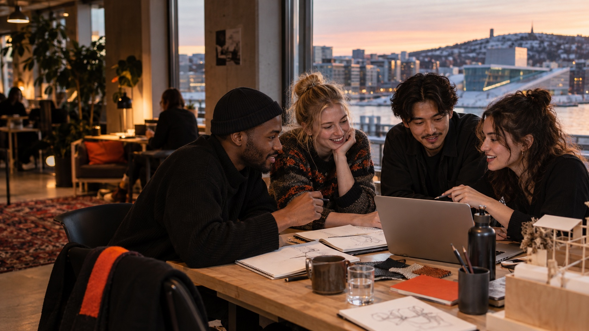

Meet
Find people who are interested in the same question — or bring a completely different point of view.
Oslo · open to everyone
Oslo Hack is a friendly place to meet curious people, turn a loose idea into a tiny project, and see what happens.
See the next session
01 / Why
You do not need a polished pitch or a perfect team. Come with a half-formed thought, meet someone who sees it differently, and make a useful first version before the day is over.
02 / The rhythm
Find people who are interested in the same question — or bring a completely different point of view.
Choose a small idea and make it real. A prototype, a poster, a script, a service — any format works.
Show the room what you tried, what surprised you, and what you would do next. Unfinished is welcome.
03 / Next session
Open session
Saturday, 12 October · 10:00–15:00
Community room near Grünerløkka
Exact address shared before the session
No preparation needed. Bring a laptop or notebook if useful to you.